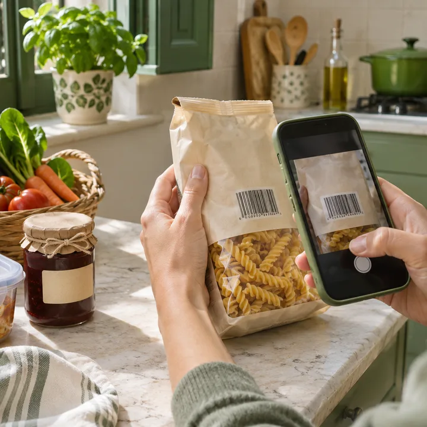

Como cadastrar alimentos no EatMeFirst
Aprenda a cadastrar alimentos pelo código de barras ou à mão, com quantidade, local e data da embalagem.
Max, Eva e Leo mostram como organizar o que você tem em casa. Já comprou algo que estava no armário, esqueceu um alimento no fundo da geladeira ou não lembrou quanto ainda tinha? O EatMeFirst foi feito para ajudar nesses momentos. Você também pode cadastrar itens de limpeza e outros produtos da casa.

Cadastro pelo código de barras
Leia o código da embalagem com o celular. Quando encontra o produto nos catálogos externos, o aplicativo sugere nome, imagem e categoria. Compare com o rótulo. Às vezes a ficha vem incompleta ou traz informações que não batem com a embalagem.
Informe quantos pacotes comprou, quantas unidades vêm em cada um e onde vai guardar. Dois pacotes com seis garrafas dão doze garrafas. Dê aos locais nomes que façam sentido na sua casa, como “armário da cozinha”, “geladeira” ou “área de serviço”.
Data do rótulo ou lembrete de conferência
Para os produtos de longa duração, você pode anotar a data exata da embalagem. Se quiser criar um lembrete para conferi-los, informe um prazo estimado em dias ou meses e o aplicativo calcula uma data para mostrar. Esse lembrete serve para se organizar e não substitui a informação do fabricante.
Quando o rótulo trouxer uma data-limite de consumo, transcreva a data exata e marque como prazo a respeitar. Evite trocar a data por uma estimativa ou adiar o prazo original. Para produtos vendidos a granel sem rótulo, você pode usar um lembrete de conferência. Produtos domésticos sem data podem ficar com o campo em branco. Siga as instruções da embalagem, inclusive depois de abrir. As datas cadastradas não garantem que um alimento esteja seguro.
Como cadastrar sem código de barras
Digite o nome de verduras da feira, geleia caseira ou uma porção de lasanha congelada. Informe a quantidade, onde guardou e, se precisar, uma data para conferir. Faça o mesmo quando a embalagem tem código, mas a busca não encontra o produto.
A confirmação salva o cadastro no navegador
Quando você confirma o cadastro, a alteração é salva na hora e de graça no navegador do celular ou computador que está usando. Não há outro botão para salvar. Abra o inventário para ver o que tem, onde guardou e as datas que informou. Os guias do aplicativo explicam os campos na própria tela.
O navegador é o programa que abre o site, como Chrome, Safari ou Brave. As informações ficam no espaço que esse navegador usa no seu aparelho. O EatMeFirst não guarda o seu inventário em um servidor próprio.